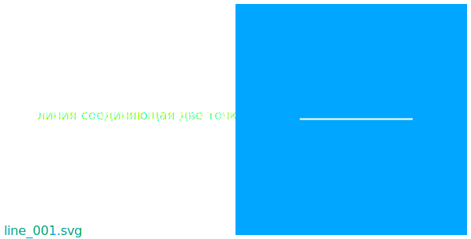
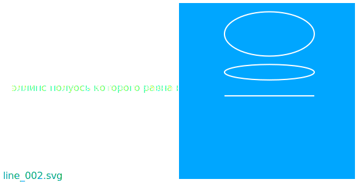
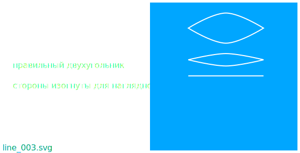

начало
отрезок
ваша реклама
Отрезок внешне похож на линию соединяющую две точки. 
Отрезок внешне похож на элипс у которого полуось равна нулю. 
Отрезок внешне похож на правильный двухугольник. 
Отрезок удобно наблюдать используя площадь поверхности.